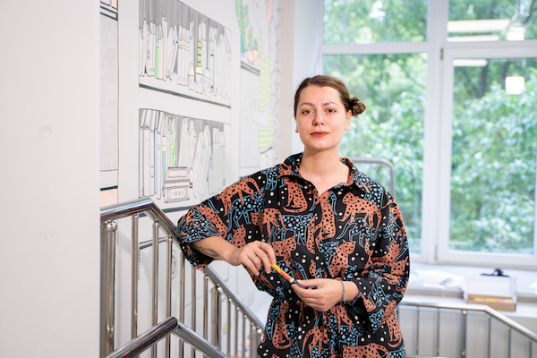

Марина Бартош
художник-иллюстратор, арт-терапевт
Образование
- Институт современных психологических технологий – арт-терапевт – Москва, 2020
- Институт современных знаний – дизайнер одежды – Минск, 2010
чё я делала
- 2022 финалист конкурса Стрит-арта, Проект Контуры Культуры: Роспись библиотеки 233 и 172, Москва
- 2020 выставка и арт-резиденция, Арт-Память, Москва
- 2020 Роспись Школы
- 2019 коллективная выставка, инсталляция “Нулевой Меридиан”, культурный центр “Порт”, Сургут
- 2019 коллективная выставка “Параллели визуального восприятия”, Московский академический художественный лицей Российской академии художеств, Москва
- 2018 мастер-класс в рамках фестиваля “Уши, Глаза, Руки”, дом-музей Велимира Хлебникова, Астрахань
- 2018 персональная выставка работ из фильма “Критик”, кинотеатр ЛенДок, Санкт-Петербург
- 2018 коллективная выставка, инсталляция “Нулевой Меридиан”(коллаборация с Павлом Сучковым), ок16, Минск
- 2017 персональная выставка “В прозрачном городе”, дом-музей Велимира Хлебникова, Астрахань
Работа над фильмами:
- 2021 «Джазист», режиссер А.Айрапетов
- 2019 «Браво Story», режиссер А.Айрапетов
- 2018 «Критик», режиссер А.Айрапетов
Подкасты с моим участием:
2022
[Kranky Talk] (https://kranky-talk.mave.digital/ep-4) [Узелок] (https://uzelok.mave.digital/ep-3)
Награды:
- XXI Международный конкурс портретов АртПлей Москва, 2016 - 1 место, графика портретов известной личности “Earthling” совместная работа с Екатериной Корчагиной
- Межрегиональный конкурс “Наималы” по творчеству Велимира Хлебникова в номинации “Изобразительное искусство” диплом II степени за работу “Числа” Министерство культуры Астраханской области Региональное отделение Всероссийской ассоциации искусствоведов. 2014